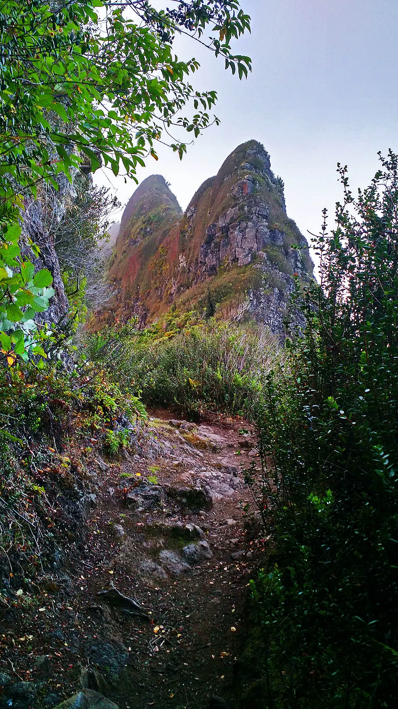

Alexander Selkirk en Juan Fernández

El archipiélago, descubierto por el navegante Juan Fernández en 1574, era durante la Colonia un refugio para corsarios y navegantes extranjeros que buscaban agua y alimento en el Pacífico dominado por España. En 1704, el escocés Alexander Selkirk, oficial de navegación del Cinque Ports, nave de una expedición corsaria inglesa, desconfió del estado del barco y pidió ser desembarcado en la isla Más a Tierra. La nave, en efecto, naufragó poco después.
Selkirk sobrevivió cuatro años y cuatro meses gracias a las cabras salvajes, introducidas por navegantes anteriores, a la langosta y a las plantas de la isla. Fue rescatado el 2 de febrero de 1709 por la expedición de Woodes Rogers. Su relato, difundido en Inglaterra, probablemente inspiró Robinson Crusoe (1719), de Daniel Defoe, aunque la novela transcurre en el Caribe y el grado de esa relación se discute. La presencia de barcos extranjeros llevó a la Corona a fundar, a mediados del siglo XVIII, el poblado de San Juan Bautista, aún hoy el principal del archipiélago.
Versión para niños
Alexander Selkirk era un marinero escocés. En 1704 discutió con el capitán de su barco y pidió que lo dejaran en una isla del Archipiélago Juan Fernández, frente a la costa de Chile. ¡Vivió solo allí más de cuatro años! Comía cabras, langostas y plantas de la isla, se hizo ropa con pieles y domesticó gatos para que lo acompañaran y alejaran a las ratas. En 1709, un barco inglés lo rescató.
Para maestros
Nivel sugerido: 5° básico
Objetivo: Comprender la importancia del océano Pacífico durante la Colonia y la presencia de corsarios y navegantes extranjeros en las costas de Chile, a partir de una historia real que dio origen a una obra literaria.
Preguntas para la clase:
- ¿Por qué los barcos extranjeros se detenían en Juan Fernández?
- ¿Qué necesitó Selkirk para sobrevivir y qué tuvo que aprender del lugar?
- ¿En qué se parecen y en qué se diferencian la historia real y la novela?
Actividad (20–30 min): Los estudiantes escriben un breve diario de vida imaginario de Selkirk (tres días), basado en datos verdaderos sobre la geografía y los recursos de la isla. Luego marcan con colores qué partes son hechos comprobados y cuáles son ficción.
Fuentes sugeridas: Memoria Chilena; Biblioteca Nacional Digital; Museo Histórico Nacional.
Personajes
Revisión humana pendiente. Cómo se revisa · Reportar un error
Cómo citar: Historia de Chile. (2026). Alexander Selkirk en Juan Fernández. En Historia de Chile: atlas y línea de tiempo. https://moises-salgado.github.io/historia-de-chile/momento/alexander-selkirk-en-juan-fernandez.html